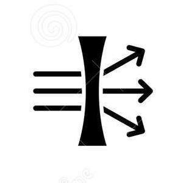
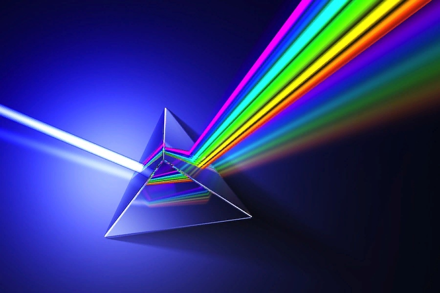
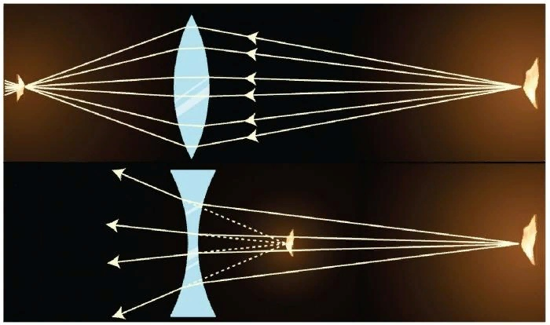

Оптика — огромный раздел физики, который изучает и рассматривает явления, напрямую связанные с распространением мощных электромагнитных волн видимого спектра, а также близких к нему диапазонов.
Закон прямолинейного распространения света.
В однородной среде свет распространяется вдоль прямых линий.

Дисперсией света называется зависимость показателя преломления вещества от цвета падающего на него света. Это проявляется в том, что если направить узкий пучок солнечного света на призму, он выйдет из призмы в виде веера цветных лучей . Цвет определяется длиной волны.

Свет - это электромагнитные волны, вызывающие зрительное ощущение. Их длина лежит в пределах от 0.4 до 0,8 мкм. Скорость света в вакууме с = 3*108 м/с.
Как всякие волны свет огибает препятствия на пути его распространения, испытывая дифракцию (см. ниже).
Однако, с увеличением размеров препятствий способность света огибать препятствия уменьшается. В большинстве практических случаев этим явлением можно пренебречь. В таких случаях свет распространяется в виде узких, почти параллельных пучков.
Луч - это направление распространения энергии в световом пучке, т.е. это прямая линия. Чем уже световой пучок, тем точнее он определяет направление луча.

Дифракцией света называется огибание световыми волнами препятствий.
Интерференцией света называют сложение световых пучков, приводящее к образованию устойчивой во времени картины светлых и темных полос. Интерференция света возможна только от когерентных источников.